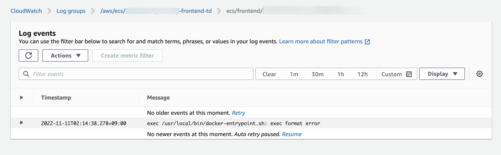
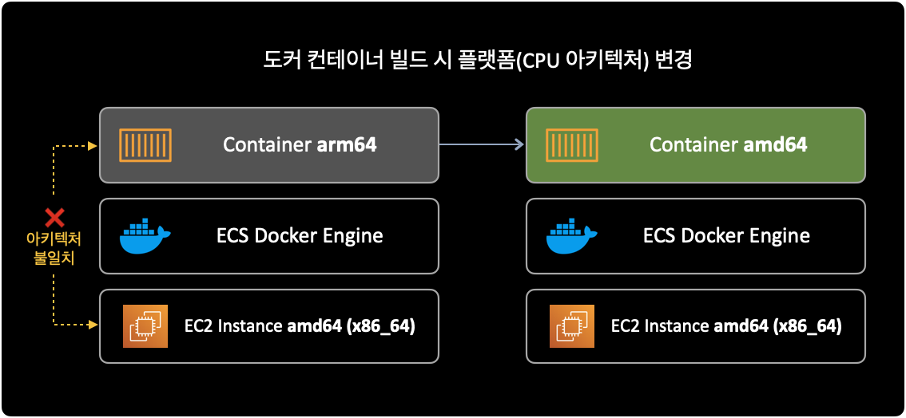

ECS exec format error 에러
증상
도커 컨테이너 이미지를 빌드한 후 ECS Task에서 아래와 같은 에러가 발생하며 동작하지 않았습니다.
문제가 발생한 이미지는 Next.js 기반의 프론트엔드 웹을 위한 컨테이너였습니다.
exec /usr/local/bin/docker-entrypoint.sh: exec format error
프론트엔드 도커 컨테이너 빌드에 사용한 Dockerfile 내용은 다음과 같습니다.
FROM node:16-alpine
WORKDIR /app
COPY . .
RUN yarn set version berry
RUN yarn
RUN yarn burger-pay:build
EXPOSE 3000
ENV PORT 3000
CMD ["yarn", "burger-pay:start"]
아래는 CloudWatch Logs에서 확인한 ECS Task의 에러 로그입니다.

원인
잘못된 컨테이너 빌드
ECR에 업로드된 도커 이미지와 실제 배포되는 인프라ECS Container Instance(EC2) 간에 CPU 아키텍처 불일치 문제로 인해 배포가 실패했습니다.
ECR에 업로드된 프론트엔드 도커 이미지는 M1 기반 arm64 아키텍처, 이 이미지가 배포될 인프라는 amd64(x86_64) 아키텍처였습니다.

해결방안
docker buildx를 사용해서 배포될 인프라의 CPU 아키텍처와 동일하게 컨테이너 이미지 빌드를 하면 됩니다.
buildx는 다른 플랫폼에 호환되는 도커 컨테이너를 빌드하는 기능을 포함하는 CLI 확장 플러그인입니다.
buildx를 Docker CLI 플러그인으로 사용하려면 Docker 19.03 이상을 사용해야 합니다.
상세 확인내용
잘못된 컨테이너
오류가 발생했던 컨테이너를 빌드한 명령어입니다.
위에서 언급한 Dockerfile을 기반으로 컨테이너 빌드를 실행합니다.
$ docker build -t burgerpay-fe-test .
위와 같이 docker build를 실행하게 될 경우, 기본적으로 빌드를 수행하는 컴퓨터의 CPU 아키텍처를 그대로 따라가게 됩니다.
맥북의 경우 arm64 아키텍처이므로 빌드한 이미지 또한 arm64로 설정 됩니다.
맥북 로컬 터미널에서 uname -m 명령어를 사용해서 CPU 아키텍처를 확인 가능합니다.
$ uname -m
arm64
아래 명령어로 빌드된 도커 이미지 상세정보를 확인합니다.
$ docker inspect burgerpay-fe-test \
| egrep -i -w 'architecture|os'
명령어 실행 결과입니다.
"Architecture": "arm64",
"Os": "linux",
로컬 맥북과 동일하게 컨테이너의 CPU 아키텍처도 arm64입니다.
이제 ECS에서도 프론트엔드 컨테이너가 정상 동작하도록 새로 이미지를 빌드해보겠습니다.
정상 동작한 컨테이너
먼저 컨테이너가 배포될 실제 인프라(EC2, ECS 등)의 CPU 아키텍처를 확인해야 합니다.
제 경우 EC2 기반의 ECS 클러스터 구성이기 때문에 직접 EC2 인스턴스에 접속해서 명령어로 CPU 아키텍처를 확인했습니다.
$ uname -m # or arch
x86_64
프론트엔드 컨테이너가 배포될 ECS의 Container Instance(EC2) 아키텍처가 x86_64임을 확인했습니다.
결과적으로 로컬(M1 맥북)에서 도커 이미지를 빌드할 때 EC2와 동일한 amd64로 이미지를 빌드해야 합니다.
이 경우 docker buildx라는 도커 CLI 플러그인이 필요합니다.
buildx는 여러 다른 플랫폼Cross-platform 용으로 컨테이너 이미지 빌드하는 기능 등을 포함하는 CLI 확장 플러그인입니다.
도커 19.03 버전 이상부터 buildx를 사용할 수 있습니다.
amd64(x86_64) 아키텍처로 이미지를 빌드하는 명령어는 다음과 같습니다.
이번에도 마찬가지로 위에서 언급한 Dockerfile을 기반으로 컨테이너 빌드를 실행합니다.
$ docker buildx build \
--platform linux/amd64 \
-t 111122223333.dkr.ecr.ap-northeast-2.amazonaws.com/burgerpay-frontend:0.0.1 .
이후 컨테이너 상세정보를 확인합니다.
$ docker inspect 111122223333.dkr.ecr.ap-northeast-2.amazonaws.com/burgerpay-frontend:amd64-0.0.1 \
| egrep -i -w 'architecture|os'
명령어 실행 결과입니다.
"Architecture": "amd64",
"Os": "linux",
컨테이너의 Architecture 값이 amd64(x86_64)로 변경된 것을 확인할 수 있습니다.
이후에 아키텍처를 알맞게 변경한 컨테이너 이미지를 ECS 서비스로 다시 배포합니다.
ECS Service 배포 확인
ECS 서비스를 배포한 다음에는 ECS 클러스터의 상태를 확인합니다.
$ aws ecs describe-clusters \
--cluster dev-apne2-burgerpay-frontend-cluster \
--region ap-northeast-2 \
--output json
명령어 실행 결과입니다.
{
"clusters": [
{
"clusterArn": "arn:aws:ecs:ap-northeast-2:111122223333:cluster/dev-apne2-burgerpay-frontend-cluster",
"clusterName": "dev-apne2-burgerpay-frontend-cluster",
"status": "ACTIVE",
"registeredContainerInstancesCount": 2,
"runningTasksCount": 2,
"pendingTasksCount": 0,
"activeServicesCount": 1,
"statistics": [],
"tags": [],
"settings": [],
"capacityProviders": [],
"defaultCapacityProviderStrategy": []
}
],
"failures": []
}
정상적으로 1개의 서비스가 ECS 클러스터에 배포된 것을 확인할 수 있습니다.
ECS Task 로그 확인
ECS가 정상적으로 배포되었으니 CloudWatch Logs에 기록된 ECS 테스크 로그를 확인합니다.
$ aws logs get-log-events \
--log-group-name /aws/ecs/dev-apne2-burgerpay-frontend-td \
--log-stream-name ecs/frontend/x3x57xxxx1434x3xxx1fe411aab59df7
컨테이너에 찍힌 로그 내용입니다.
{
"events": [
{
"timestamp": 1668105000120,
"message": "ready - started server on 0.0.0.0:3000, url: http://localhost:3000",
"ingestionTime": 1668105004229
}
],
"nextForwardToken": "f/37199984602912945150919581120365194235947007390943215618/s",
"nextBackwardToken": "b/37199984572071014541351729315621295864874323428172300288/s"
}
이전에 발생하던 exec /usr/local/bin/docker-entrypoint.sh: exec format error 메세지가 사라지고 정상적으로 프론트엔드 컨테이너가 실행된 걸 확인할 수 있습니다.
참고자료
’exec user process caused: exec format error’ in AWS Fargate Service
Stack overflow에 올라온 동일한 질문인데, 위 글이 문제 해결에 결정적인 도움이 됐습니다.
docker buildx
buildx 깃허브